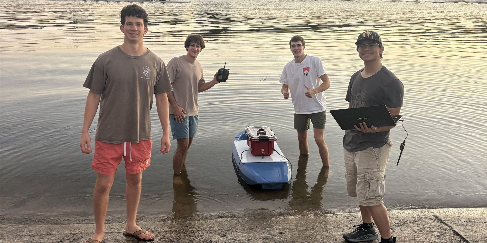
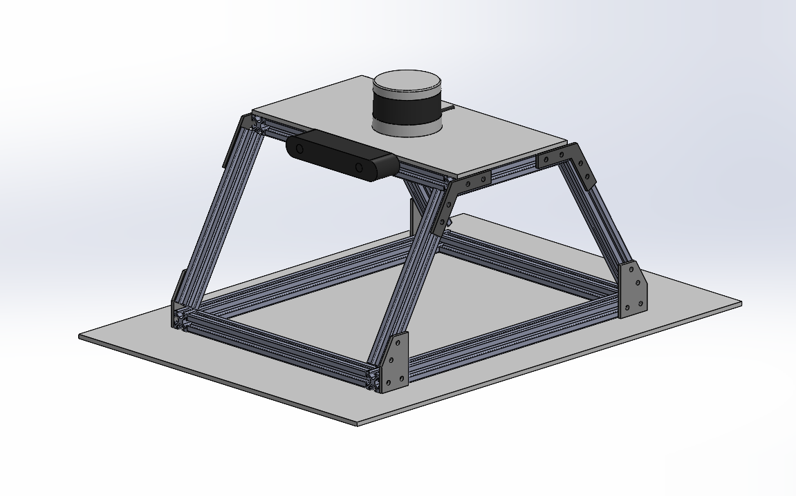

Jan 2026 – Present
Texas Marine Robotics
Mechanical design for the team's autonomous surface vessel, which has to carry its sensors and stay stable on the water.
- Role
- Mechanical Design Team Co-Lead
- Focus
- Structure, sensor mounting, hydrodynamics
- Tools
- SolidWorks, CFD, flow testing
What I do
- Component design: design mechanical parts that support sensor integration while keeping the vessel light.
- CAD: model mounting hardware and structural parts that stay stable in harsh marine conditions.
- Simulation and testing: run CFD and physical flow tests to study hydrodynamic performance and guide structural decisions.

